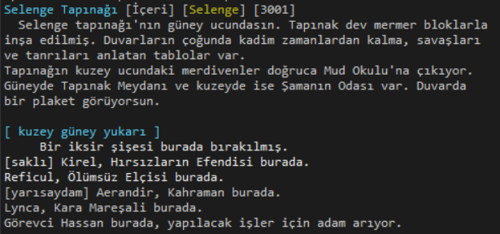

Bu bölümde genel mud kavramları incelenecektir.
Karakter, oyuncunun Uzak Diyarlar’da kontrol ettiği varlıktır. Komutlarla yönlendirilir. Belli bir ırkı, sınıfı, cinsiyeti, yönelimi, ekipmanları, yetenekleri vardır.
Uzak Diyarlar'da karakter yaratımı bir çok adımdan oluşan kapsamlı bir iştir ve ilerleyen bölümlerde ayrıntılı olarak anlatılacaktır. Karakterler tecrübe puanı (experience points) toplayarak seviye kazanır. Bir karakter ilk yaratıldığında 1.seviyedir ve 17 yaşındadır.
Karakterler sunucu üzerine kaydedilir. Böylece dünyanın istediğiniz yerinden bağlanıp kaldığınız yerden devam edebilirsiniz. Fakat karakterler 2.seviye olmadan kaydedilemezler. Bu, spam karakterler yaratarak oyun işleyişini zayıflatmak istenmesine karşı bir savunmadır. Fakat korkmaya gerek yok. Gerekli adımları izleyen bir oyuncu, karakterini 5-10 dakika içersinde 2.seviyeye çıkaracak ve kaydedecektir.
Uzak Diyarlar'da bir oyuncunun gelebileceği en yüksek seviye 91'dir. 91-100 arası seviyeler ölümsüz karakterlerine ayrılmıştır.Bir oyuncu karakteri 91. seviyeye geldikten sonra yeniyaşam alarak 1.seviyeden başlayabilir. Fakat bu kez normal 1.seviye karakterlerde olmayan kimi önemli özellikleri vardır.
Karakterleri yöneten oyunculardan belli kurallara uymaları beklenir. Bunlardan en önemli iki tanesi diğer oyuncuların kişiliklerine saldırı yapmamak ve oyunu bir fantezi dünyasının masalsılığına yakışır şekilde oynamaktır.
Uzak Diyarlar odalardan oluşan bir haritaya sahiptir. Bu haritayı bal peteğine benzetebiliriz. Odalar birbirine bağlanarak bölgeleri oluşturur. Bölgeler de birbirine bağlanarak diyarın haritasını meydana getirir. Aşağıda Selenge bölgesindeki meşhur Selenge Tapınağı odasının görünümü verilmiştir: Bir oda 5 bileşenden oluşur:

Başlıkta 3 bilgi bulunur: Oda ismi, odanın bulunduğu bölgenin adı ve odanın sektörü. Yukarıdaki ekran görüntüsünde oda ismi "Selenge Tapınağı", odanın bulunduğu bölge "Selenge" ve odanın sektörü "İçeri"dir. “İçeri” sektörü odanın duvarlarla çevrili olduğunu belirtir. Yapacağı büyüsü için açık havaya ihtiyaç duyan bir büyücü bu odadan pek hoşlanmayacaktır :-)
Oda tanımı odanın görünümünü anlatan kısımdır. Yukarıdaki örnekte "Selenge Tapınağı'nın güney ucundasın..." ile başlayıp "... Duvarda bir plaket görüyorsun." şeklinde biten paragraf odanın tanımıdır. Oda tanımları süsten öte geçmiyor gibi görünse de kimi zaman oda ve bölge hakkında çok önemli ipuçları barındırır. Okumayı ve hayal etmeyi sevenlere yardımcı olacağı aşikardır.
Odalar temel yönlerle ( kuzey, güney, doğu, batı, yukarı, aşağı ) birbirine bağlanır. Birbirine bağlanmış odaları bal peteğine benzetebiliriz. Odada bulunan çıkışlar oda tanımının altında listelenir. Yukarıdaki ekran görüntüsünde çıkışlar Kuzey, Güney ve Yukarı'dır. Odaların açıkça belirtilen çıkışları haricinde gizli çıkışlar da olabilir.
Eğer odada eşya bulunuyorsa bunlar çıkışların altında listelenir. Yukarıdaki örnekte odada (yerde) bir harita bulunduğu belirtilmiştir.
Eğer odada canlılar varsa bunlar oda çıkışlarının altında, varsa eşyalardan sonra listelenir.
Mob ismi “mobil” sözcüğünden gelmektedir ve mud kodu tarafından yönetilen yaratıkları simgeler. Oyunda türlü mob vardır. Fırıncılık yapıp para kazananı, serserilik yapıp adam soyanı, kocaman bir kılıçla öldürecek birini arayanı...
Moblar odalarda bulunur. İçinde mob bulunan örnek bir oda 2.1 başlıklı konudaki ekran görüntüsünde verilmiştir.
Bir mob hakkında detaylı bilgi almak için ona bakmanız gerekir. Bunu bak komutuyla gerçekleştirebilirsiniz. Örneğin bak hassan derseniz Hassan isimli mob hakkında bilgi edinirsiniz. Bu komut oyuncu karakterlerine bakmak için de kullanılır. Aşağıda örnek bir mob detayı verilmiştir:
Eşyalar mud'ın vazgeçilmez parçalarıdırlar. Koruyucu zırhlar, öldürücü silahlar, doyurucu besinler, içecekler, iyileştirici iksirler hep birer eşyadır. Eşyaları üzerimize giyebilir, yanımızda taşıyabilir ya da odalara bırakabiliriz. Odaya bırakılmış bir eşya için örnek bir oda görüntüsü aşağıda verilmiştir.
Odalarda bulunan eşyalar al komutuyla alınabilir. Eşyaların detaylarını görmek için bak komutu kullanılabilir. Bu komut özellikle haritalara bakmak için kullanılır.
Her oyuncu karakterinin 6 çeşit niteliği vardır. Nitelikler sayısal değer taşıyan özelliklerdir. İlk değerleri karakter yaratılırken atılan zarlarla belirlenir. Daha sonra eğitim yaparak artırılır. Her bir niteliğin karakterin gelişimi ve yaşayışı üzerinde ciddi etkileri vardır.
Güç :Karakterin dövüşlerde daha sert vurabilmesini sağladığı gibi daha ağır yük taşıyabilmesini de sağlar.
Zeka :Karakterin yetenekleri öğrenme ve geliştirme hızını belirler. Büyü yaparken de fevkalade önemlidir.
Bilgelik :Karakterin seviye yükselişlerinde kazandığı mana puanını etkiler.
Çeviklik :Karakterin dövüşlerde daha çevik hareket ederek kendini korumasını ve rakibine daha rahat vurmasını sağlar.
Bünye :Karakterin seviye yükselişlerinde kazandığı yaşam puanını etkiler.
Karizma :Dövüşlerde düşmanı ürkütecek bakışlar atabilmenizi sağlar:-)
Pratik, karakterin yeteneklerini geliştirmek için yaptığı iştir. Karakter seviye atladığında o seviyenin yeteneklerini kullanma hakkı edinir. Ama önce bunları pratikçide biraz pratik etmelidir. Unutmayın, pratik işlemi bir pratikçinin nezaretinde olur. %1 gelen yetenek pratikle %75'e kadar çıkartılabilir. %75'den %100'e çıkarmak için o yeteneği kullanmak gerekir.
Pratik yapmak için pratik puanı gereklidir. Karakter ilk yaratıldığında verilen pratik puanıyla öncelikle en gerekli yetenekler pratik edilmelidir. Tabii ki en gerekli yetenek silah kullanma yeteneğidir. Karakteri yarattıktan hemen sonra bir savaşçının "kılıç" yeteneğini, bir hırsızın "hançer" yeteneğini %75 yapması iyi olur.
Karakter her seviye atladığında yeni pratik seansları kazanacaktır. Bir yeteneği %1'den %75'e kaç pratik puanı (seansı) harcayarak yükselttiğiniz zekanızla ilgilidir. Silah kullanma pratiğini yaptıktan sonra zekayı iyice artırana kadar pratik yapmamak ve puanları biriktirmek anlamlı bir strateji olabilir. Zekanız artığında birikmiş pratik seanslarınızla daha verimli pratikler yapabilirsiniz.
Bilinen en meşhur pratikçi Selenge bölgesindeki Hassan'dır. Pratik yapmak için pratik komutu kullanılır.
Eğitim işlemi niteliklerin ( güç, zeka, bilgelik vs. ) değerlerini artırmak için yapılır. Eğitim işlemi de pratik işlemi gibi bir eğitimcinin nezaretinde yapılmalıdır. Niteliklerin hepsi ayrı öneme sahip olsa da yeni bir karakterin sırasıyla hangi nitelikleri artırması gerektiğinin kaba bir listesi vardır:
1- Bünye ,2- Bilgelik ( veya Zeka ), 3- Zeka ( veya Bilgelik ), 4- Güç, 5- Çeviklik, 6- Karizma
Kısacası yeni bir karakter öncelikle Bünye niteliğini sonuna kadar artırmalıdır. Her eğitim seansında 1 eğitim puanı harcanır. Karakter her seviye atladığında eğitim puanı kazanır.